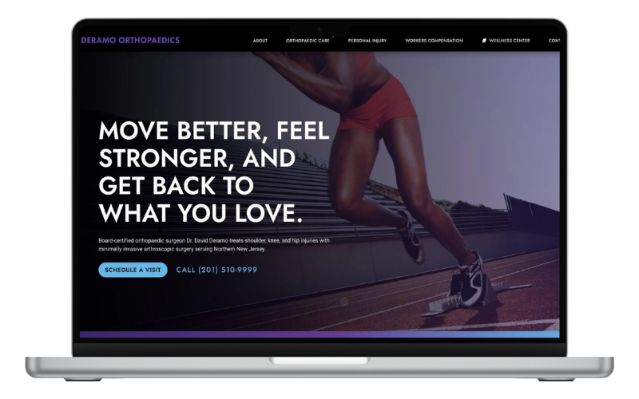
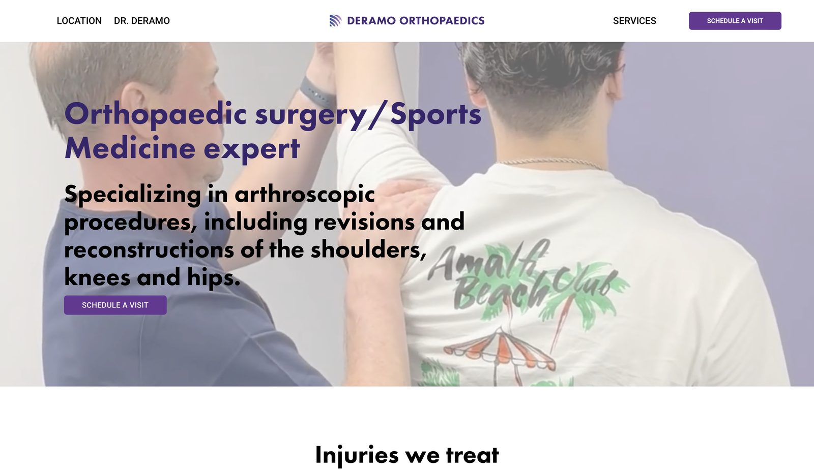
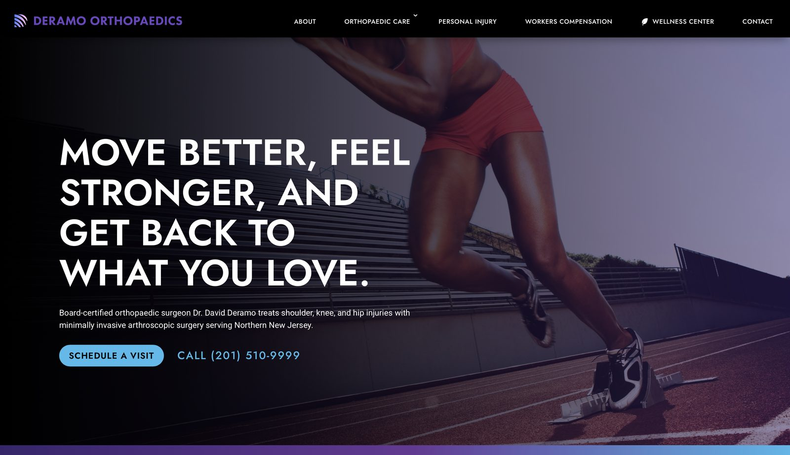

Deramo Orthopaedics & Wellness Center
The starting point
Dr. David Deramo has practiced orthopedic surgery and sports medicine for about twenty years, and opened his own boutique practice in West New York a couple of years ago. It runs out-of-network by choice, and for a long time it ran almost entirely on relationships. Attorneys, chiropractors, pain-management doctors, and case managers sent patients his way after meeting him at dinners and networking events. The referrals kept coming, and the orthopedic side of the practice was never the problem.
What changed was the wellness center.
Why now: the new wellness center
Deramo invested in premium wellness technology, an Emsculpt Neo and an Emvital medical laser, and built a wellness center around them. It's a new offering for a new audience. A referral network keeps an orthopedic schedule full, but it doesn't introduce the community to wellness services most people in his area have never heard of.
That was the reason he came to us. He needed a site that could attract those patients and look the part while it did. He was firm on one point: organic search, not paid ads. In his experience people click off an ad fast, and he'd rather be found by the people already searching.
His existing site was built for a different job. He put it up years ago as a simple, professional presence, back when the practice ran on referrals and the website was never meant to bring anyone in. Opening the wellness center changed what the site needed to do. Now it had to reach people who don't know him yet and introduce them to what the center offers.


The homepage, before and after
Built for search from the sitemap up
To rank for each service and give the wellness center a home of its own, the site needed real structure. We started with strategy and a sitemap built for SEO, then mapped the practice into eleven pages.
The wellness center is the reason the whole site exists, so it got its own home in the architecture, a page written to introduce the equipment to people who have never heard of it and give the practice something to be found for. The orthopedic and sports medicine work, the part that already runs on referrals, sits under one hub with individual pages beneath it for shoulder, knee, hip, and sports medicine. Personal injury and workers' comp each got their own page. Add the home, about, blog, and contact pages, and that's the eleven. The point of the structure is simple: a page for each service, so each one can rank for its own search instead of being buried on a single crowded page.
I wrote every word of it. Deramo supplied photos, and I handled the rest: the copy, the page structure, the titles and meta, the internal links, and the local signals that tell Google where he is and who he serves. The build is modern and mobile-friendly, which matters more here than it sounds, since most people looking for a doctor are doing it from their phone.
Beyond the site, I optimized his Google Business Profile so the practice shows up cleanly in local search and on the map. The blog is set up as an organic-traffic engine, four posts to start, written around the terms his future patients are actually typing. It's the lever he can keep pulling for more local visibility, and for the wellness side especially, without ever touching a paid ad.
Pages that speak to the people who send him patients
The referral engine is the heart of this practice, so two pages were written for a different reader than the rest of the site. The personal injury and workers' comp pages don't lead with the patient. They lead with what attorneys and case managers care about: the personalized reports Deramo writes himself, direct access to him rather than a front desk, and notes turned around in under 24 hours.
That's his real pitch, the thing that has kept the referrals coming for years. Now the site makes it for him, in writing, before he ever shakes a hand at a dinner.
The brand system
Deramo came in with a brand sheet and a set of reference sites that pulled in a few different directions, so part of the work was settling the look. We captured a system built on black and white with a deep purple, a mid purple, and a bright blue, set in Futura for headlines and Roboto for body. To resolve the mood, I designed two homepage directions so he could see the difference on the screen instead of guessing at it on paper.